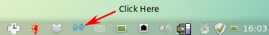
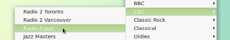
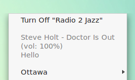
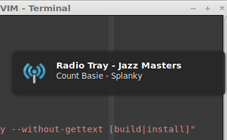
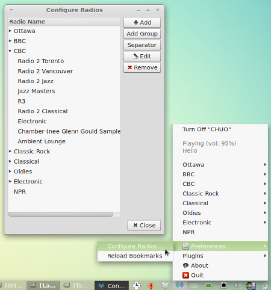
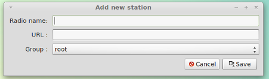
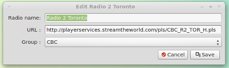
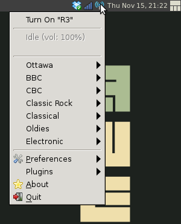
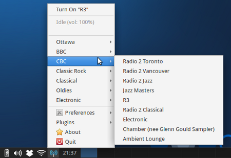

Radio Tray is a simple internet radio player that lives in the system tray or Application Indicator. It saves a list of your favourite stations for easy access to wonderful music. Its aim is to be as simple as possible, staying out of the way and doing one thing really well.
On Windows, Radio? Sure! is a similar program that also resides in the tasktray. It mirrors a lot of Radio Tray's functionality but differs in that the Windows application actually gives you access to a user maintained database of Internet Radio stations.
On Linux, Radio Tray is fairly unique. Some people would compare it to KDE's Amarok or Novell's Banshee, but these are more general media applications and are far more featured. They stray from Radio Tray's single purposeness. They aren't as well suited to managing and playing Internet Radio, despite being able to.
Audacious shares Radio Tray's simplicity, but is geared to being an all around music player. While Radio Tray is designed to stay hidden, Audacious is much more front and center, having the user interact with it more often to set playlists and move the window around.
Using Radio Tray couldn't be simpler. All you have to do is click the Radio Tray icon on your system's Application Indicator or System Tray.

A list of stations will appear. Open a group and select one.

The stream will start playing and the current song will be listed at the top of the menu.

When a stream starts playing or it changes song, a notification dialog will appear at the corner of your screen.

To stop playback, select Turn Off "Station Name" from the menu.
Radio Trays offers a simple and intuitive interface to modify Internet Radio station bookmarks.To access it, simply open Radio Tray and select Preferences -> Configure Radios ....

Bookmarks can live at the root of the Radio Stations dialog or be grouped together. Here is an example of the former (NPR) and the latter (CBC).
Close the dialog to save your modifications.
To save a new station, press the Add button in the Configure Radios dialog. The Add new station dialog will appear. Enter the station's name, the stream's URL and either select the root or a group it should belong to.

To edit an existing bookmark, select it in the Configure Radios list and press the Edit button. An edit dialog will appear. Change fields as required.

This section will cover installing Radio Tray on a variety of distribution. Whenever possible, please use a package manager to install it. This will keep all dependencies in check and ensure a successful installation.
A Radio Tray package is maintained in Ubuntu's Universe repository along with other community maintained software. Simply use apt-get to install it.
$> sudo apt-get update
$> sudo apt-get install radio-tray
Unfortunately, this package is always a few versions behind. As of this writing, version 0.7.2 is in the Ubuntu Quantal Quetzal (12.10) repositories and version 0.6.4.1 in the Precise Pangolin (12.04) repositories, yet the latest stable version is 0.7.3.
Fortunately, the wonderful folks at Estobuntu (an Estonian derivative of Ubuntu), have maintained a personal package archive (PPA) with the current version of Radio Tray for Ubuntu 12.04. A PPA is a privately maintained set of packages openly available to the public. Simply add it to your list of repositories and you'll always be up to date.
$> sudo add-apt-repository ppa:estobuntu/ppa
$> sudo apt-get update
$> sudo apt-get install radiotray
If add-apt-repository fails, simply install it using the python-software-properties package.
$> sudo apt-get install python-software-properties
The Radio Tray project maintains a binary package of the latest version. Installing the program from it is as follows.
Navigate to the /tmp directory. Download the deb file.
$> cd /tmp
$> wget http://downloads.sourceforge.net/project/radiotray/releases/radiotray_0.7.3_all.deb
Install it using Ubuntu's package manager.
$> sudo dpkg -i radiotray_0.7.3_all.deb
Once installed, you must follow through with the missing dependencies. This can be taken care of by the package manager.
$> sudo apt-get install -f
Boom. You're done.
There exists a package in the Arch User Repository (AUR) that contains a PKGBUILD file. The package does not contain binary. Instead, it will assist you in downloading and building the source from Radio Tray's site.
Just follow the typical Arch Linux installation process.
Open up the command line and navigate to the /tmp directory, create a new directory and navigate to it.
$> cd /tmp && mkdir radiotray && cd radiotray
Download the tarball from the URL listed on package's page.
$> wget https://aur.archlinux.org/packages/ra/radiotray/radiotray.tar.gz
Extract the PKGBUILD file from the tarball to the new directory and navigate to it.
$> tar -zxvf radiotray.tar.gz
$> cd radiotray
Build the package which will resolve the required dependencies listed within the PKGBUILD file.
$> makepkg -s
Use the pacman package manager to install the built binary package, replacing the filename with the appropriate one.
$> pacman -U radiotray-*-*-i686.pkg.tar.xz
The Fedora Package Database contains a Radio Tray package.
$> su - 'yum install radiotray'
This will require you to enter your admin password.
As of this writing, the package (ver 0.7.1) is slightly dated.
The Portage database contains a Radio Tray package.
To install, simply use the wonderful Portage package manager.
Update the Portage tree.
$> emerge --sync
Use emerge to install it.
$> emerge radiotray
If you'd like to keep up with the bleeding edge or your distribution doesn't ship with a Radio Tray package, your only option may be to install it from source.
Before starting the installation process, make sure your system has all of Radio Tray's dependencies. Your distribution's package names may differ, but for Ubuntu and Debian, the following packages are required
Open up the command line and navigate to the /tmp directory, create a new directory and navigate to it.
$> cd /tmp && mkdir radiotray && cd radiotray
Download the source code to your disk.
Either clone the project's mercurial repository
$> hg clone https://bitbucket.org/carlmig/radio-tray
Or download the official source tarball from the project's homepage and extract it.
$> wget http://downloads.sourceforge.net/project/radiotray/releases/radiotray-0.7.3.tar.gz
$> tar -zxvf radiotray-0.7.3.tar.gz
Navigate to the source.
$> cd radiotray-0.7.3
If you'd like to try Radio Tray before installing it to your system, run the executable.
$> ./radiotray
If it doesn't work, you may need to change the file's permissions and make it executable.
$> chmod +x ./radiotray
Finally, to install it to your machine, run the set up script.
$> python setup.py install
setup.py uses Python's distutils library to install the application. This is the conventional way of distributing Python modules to many systems and handles the distribution specific installation details. For more information visit Python Doc's Installing Python Modules.
Radio Tray is a small project, but it can always use more help. Here are a few suggestions. The newest version comes with a well defined plug-in framework. Try implementing a new feature. If you'd like to to translate the program into your native language, visit Radio Tray's Transiflex page for instructions on how to do so. Lastly, if you find a bug or would like to implement a new feature, please visit the project's issues page where you can create bug reports or give suggestions. The best way to contribute is to read through the open issues and implement bug fixes. The project is hosted on BitBucket using Mercurial as source control. Forking and contributing patches should be no trouble.
This document uses the following conventions:
command" denotes a command line prompt and associated command.word in a mono spaced font is a technical keyword.All radio stations are saved to bookmarks.xml which is located in ~/.local/share/radiotray. It is an XML file that uses a nested hierarchy to represent groups and stations. If a bookmarks file isn't at that location, the default bookmarks.xml will be copied over. Moving or backing up an existing set of bookmarks is as simple as copying this file.
Here is an example of a simple bookmarks.xml file. It describes three radio stations. Two that are grouped together and one that will be located at the root of the stations list.
<bookmarks>
<group name="root">
<group name="CBC">
<bookmark name="Radio 2"
url="http://playerservices.streamtheworld.com/pls/CBC_R2_TOR_H.pls"/>
<bookmark name="R3"
url="http://playerservices.streamtheworld.com/pls/CBC_R3_WEB.pls"/>
</group>
<bookmark name="DI EuroDance"
url="http://scfire-dtc-aa04.stream.aol.com:80/stream/1024"/>
</group>
</bookmarks>
The entire document must be nested within the <bookmarks> ... </bookmark> tags for it to be valid XML. Bookmark entries are declared using the <bookmark name="..." url="..." /> tag, which contains the station name and stream URL attributes. It must be self terminating.
Bookmarks are grouped using the <group name="..."> ... </group> tags. Group names are declared using the name attributes. Any bookmarked within these tags will be grouped together. Every bookmark or group must be nested within the top <group name="root"> which represents the root of the bookmark list. Many groups can be nested within each other.
To load any changes to bookmarks.xml, reload the file by selecting Preferences -> Reload Bookmarks from Radio Tray's main menu.
Radio Tray's configuration state is saved to config.xml which is located in ~/.local/share/radiotray/. If one isn't in that folder, the default configuration file will be copied over.
<config>
<option name="volume_increment" value="0.05"/>
<option name="volume_level" value="1.0"/>
<option name="url_timeout" value="100"/>
<option name="enable_application_indicator_support" value="false"/>
<!-- valid options are 'appindicator', 'systray' and 'chooser' -->
<option name="gui_engine" value="appindicator"/>
<option name="active_plugins">
<item>Notifications</item>
</option>
<option name="buffer_size" value="164000"/>
</config>
Every option is housed in an <option name="..." value="..."> tag with a key/value (name/value) pair.
volume_increment expects an float (0 < x < 1). Default: 0.05
Determines the step size at which the GStreamer audio player will raise or lower volume.
volume_level expects a float (0 < = x < = 1). Default: 1.0
Determines the current volume for the GStreamer audio player.
url_timeout expects an integer (0 < = x). Default: 100
The amount of time in seconds until the connection to a stream times out.
enable_application_indicator_support expect a boolean. Default: "false"
gui_engine expects a string. Default: "chooser"
This settings determines where and how the Radio Tray icon and menu will be displayed. There are three options: chooser, appindicator and systray. chooser displays a dialog box that lets you choose between the other two options and saves the result. systray will have the icon appear on the far right panel of the task area. This is where system features like volume control and power management are housed. appindicator will have the icon appear right before that, in the Application Indicator area. This is where applications who wish to have part of their interface on the panel is located. For more information on the differences, visit the Application Indicators Ubuntu Page.
It is suggested that you select appindicator because the menu will be nicer.
active_plugins
Determines which plugins are active. Set the plugin's name to activate it.
buffer_size expects an integer (0 < x). Default: 164000
Sets gstreamer's buffer size in bytes. A larger size will ensure smoother playback but consume more memory.
Radio Tray is written in the Python programming language using the GTK+ GUI library and the gstreamer multimedia framework.
GTK+ is a well supported project that allows Radio Tray to integrate well in many desktop environments and window managers. Here are a few examples of the program in various GTK+ supported contexts:

Radio Tray in the Awesome Windows Manager.

Radio Tray in the Xfce Desktop Environment.
Glade, Gnome's User Interface Designer, was used to build the bookmark and preferences pane. Glade uses XML files and the GTK+ library to dynamically generate these panes on the fly. Theses files are located in /usr/share/radiotray.
Gstreamer supports a wide variety of formats including asf, avi, ogg and others. It allows Radio Tray to use the pls, m3u, asx, wax and wvx playlist formats.
python-notify is a set of Python bindings for libnotify, a part of the Gnome library. It sends messages to a desktop notification deamon using D-Bus for interprocess communication and adheres to the freedesktop.org Desktop Notification specification. On Ubuntu, these notifications manifest themselves as bubbles appearing in top right corner of the desktop.
The python-central dependency install the distutils. As discussed in the Installing From Source section, Radio Tray relies on the on it for packaging and distributing Python programs.
The following are a list of noteworthy directories where Radio Tray's components are installed. This section applies to an Ubuntu/Debian based system. Other distributions may differ.
~/.local/share/radiotray
Bookmark and configuration files specific to a user. Radio Tray will load these before looking at the default configuration directory below.
~/.local/share/radiotray/plugins
User specific plug ins and their configurations.
/usr/bin
Stores the program's main executable.
/usr/share/locale
Radio Tray has been translated into dozens of languages and stores its localization files here.
/usr/share/pyshared/radiotray
The bulk of Radio Tray's executable code lives here. This directory adheres to the Debian/Ubuntu's Python policy which states that shared Python modules should be stored in a child of /usr/share/pyshared.
/usr/share/radiotray
Default bookmarks and configuration xml files, glade files and image resources.
/usr/share/radiotray/plugins
Default plugin directory
/usr/share/applications
Stores radiotray.desktop, so that Radio Tray appears in the program menus of freedesktop.org compliant desktop environments.
/usr/share/doc/radiotray and /usr/share/man/man1
The documentation and man page directories. On FreeBSD, setup.py installs the man page to /usr/man/.
/usr/share/pixmaps
Radio Tray's icon is located here. This adhere's to freedesktop.org's Icon Theme Specification.
/usr/lib/python2.7/dist-packages/radiotray/ and /usr/lib/python2.6/dist-packages/radiotray/
Stores Radio Tray's Python byte code.